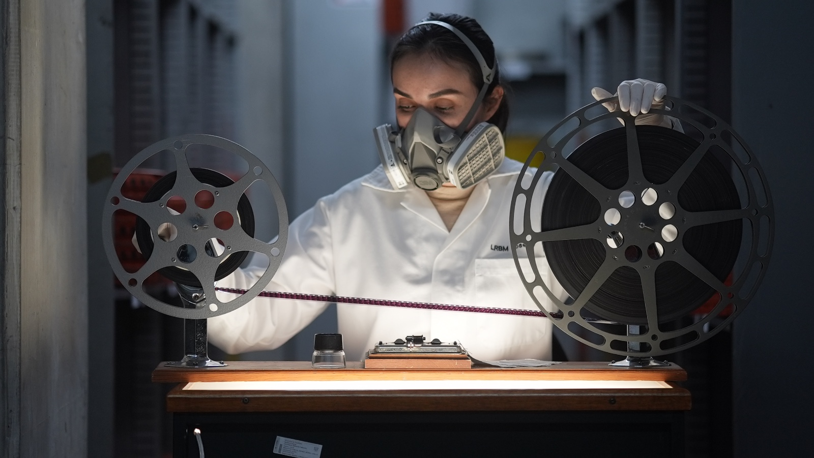

The Permanence of Movement or "La Permanencia del Movimiento" in its original spanish title, is a short documentary film written and directed by Joss Alvarado, produced in March, 2025.
THE PERMANENCE OF MOVEMENT is a short documentary film that showcases the professional career of Joselyn, a restorer and conservator of analog film who lives in Guadalajara, Mexico.
Joselyn tells us about her main inspirations for choosing audiovisual archives as her profession and the challenges they present, in the search to implement film heritage preservation practices in her city, at the Visual and Sound Archive (AVS) that is part of the Jalisco State Public Library “Juan José Arreola”.
At AVS, Joselyn, along with an interdisciplinary team, has developed projects that revalue audiovisual collections, such as rescuing the "National Motion Picture" film collection, restoring posters, digitizing various film formats, and disseminating home movies and family archives…
The AVS is working towards the creation of a Film Archive that fulfills the essential functions of an audiovisual archive, supporting the decentralization of specialized archives concentrated in the nation's capital. This project continues the vision of film critic and historian Emilio García Riera, who laid a solid foundation for cinema in Guadalajara through the founding of the CIEC (Center for Research and Cinematographic Studies), whose archival vocation and documentary legacy were inherited by the AVS.
Through these proposals, Joselyn defends the importance of preserving local and regional audiovisual memory as a responsibility and necessity for the community. Moving images and sound move through time, toward new formats and technologies, toward future generations and cultural horizons. Preservation seeks to keep the cinema in constant movement.
La Permanencia del Movimiento Spanish, with English subtitles. 2025. Color and B&W. 00:15:37